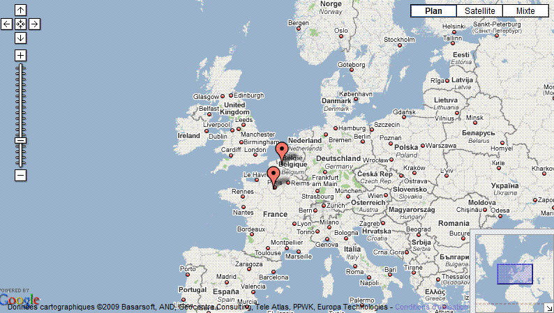
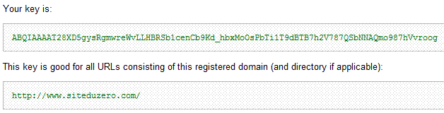
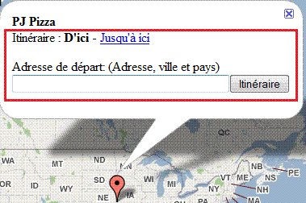

Je vais ici vous expliquer comment intégrer une carte Google Maps à votre site et vous décrire les fonctions que vous pouvez ajouter à votre carte. Pour aborder le tutoriel, il faut connaître un minimum le PHP…
J'espère que ce tutoriel vous plaira et qu'il vous sera utile. N'hésitez pas à donner vos avis et vos conseils dans les commentaires pour que je puisse l'améliorer.
On va commencer de zéro en voyant ensemble ce qu'est Google Maps et ce que l'on peut réussir à réaliser à la fin de ce tutoriel.
Tout d'abord, Google Maps est une plate-forme, développée par le géant américain Google, qui génère une carte mondiale. Vous pouvez rechercher un lieu dans le monde entier ou encore tracer des trajets entre deux lieux. Mais il ne s'arrête pas là, en proposant des vues différentes comme :
la vue plan ;
la vue satellite ;
la vue relief.
Vous l'aurez compris, Google Maps possède de nombreuses compétences intégrées à sa plate-forme et ce tutoriel va vous expliquer comment intégrer une carte à votre site web. Vous pourrez ainsi placer des pointeurs à partir d'une latitude et d'une longitude, ou mieux encore, à partir d'une adresse postale ! Il est fort, ce Google ! :lol:
Voici ci-dessous une carte de Google Maps. C'est ce genre de carte que vous pourrez intégrer à vos sites :

Les cartes de Google Maps peuvent vous être d'une grande utilité pour rendre dynamique votre site et « gadgeter » un peu votre page web !
Il faut savoir que Google Maps n'est pas à la base de cette API PHP, et que pour créer une carte il faut utiliser le JavaScript.
Quoi ? Mais je ne connais pas le JavaScript…
C'est pour cela que cette API PHP a été développée. Elle a pour but de générer pour vous le code JavaScript sans que vous vous en rendiez compte. :)
Comme je vous l'ai dit précédemment, nous allons utiliser une classe PHP de Google Maps appelée « GoogleMapAPI V2.5 ».
Euh... c'est quoi, cette classe PHP ?
Cette classe va nous permettre d'appeler des méthodes (quasi similaires à des fonctions PHP, pour faire simple) et celles-ci vont s'occuper de tout pour générer un code JavaScript qui sera votre belle carte !
Cette remarque pourra être utile pour toutes les personnes qui désirent afficher des cartes dans différentes pages ! ;)
Vous allez donc vous retrouver avec une clef unique à votre site une fois que vous aurez entré l'URL du site et accepté les conditions générales d'utilisation.

Conservez cette clef, nous l'intégrerons dans le code dans quelques instants.
Allez : c'est parti, on s'attaque au code. On va donc simplement suivre cinq étapes décrites ci-dessous et reportées en commentaire de code plus bas :
inclure la classe PHP : GoogleMapAPI.class.php ;
démarrer une nouvelle carte ;
déclarer la fameuse clef de Google ;
donner des caractéristiques à notre carte (largeur, hauteur…) ;
afficher le code XHTML avec les quelques fonctions obligatoires pour que la carte fonctionne.
<?php
//(1) On inclut la classe de Google Maps pour générer ensuite la carte.
require('GoogleMapAPI.class.php');
//(2) On crée une nouvelle carte; Ici, notre carte sera $map.
$map = new GoogleMapAPI('map');
//(3) On ajoute la clef de Google Maps.
$map->setAPIKey('<ici la clef Google Maps>');
//(4) On ajoute les caractéristiques que l'on désire à notre carte.
$map->setWidth("800px");
$map->setHeight("500px");
$map->setCenterCoords ('2', '48');
$map->setZoomLevel (5);
//(5) On applique la base XHTML avec les fonctions à appliquer ainsi que le onload du body.
?>
<!DOCTYPE html PUBLIC "-//W3C//DTD XHTML 1.0 Strict//EN" "http://www.w3.org/TR/xhtml1/DTD/xhtml1-strict.dtd">
<html xmlns="http://www.w3.org/1999/xhtml" xml:lang="fr" >
<head>
<title>Ma première carte Google Maps</title>
<?php $map->printHeaderJS(); ?>
<?php $map->printMapJS(); ?>
</head>
<body onload="onLoad();">
<?php $map->printMap(); ?>
</body>
</html>
Et voilà, votre première carte Google Maps est intégrée à votre site web ! ;)
Euh… j'ai quelques petites questions sur les caractéristiques de la carte…
Ah oui ! J'allais oublier de vous donner des précisions sur les caractéristiques : <?php $map->setWidth("800px"); ?> : on définit une largeur de 800 px. <?php $map->setHeight("500px"); ?> : on définit une hauteur de 500 px. <?php $map->setCenterCoords ('2', '48'); ?> : on centre la carte sur la France qui a pour longitude 2 et pour latitude 48. <?php $map->setZoomLevel (5); ?> : le zoom à appliquer sur la carte compris entre 0 et 17.
Certes, pour le moment, il n'y a pas grand-chose, mais la partie suivante vous donnera toutes les caractéristiques possibles à intégrer à votre carte (pointeur, zoom, style de vue par défaut, échelle, distance entre deux points…).
Voici ci-dessous des caractéristiques permettant de faire varier votre carte en fonction de vos besoins. Vous connaissez déjà quatre caractéristiques paramétrables de Google Maps, que j'ai été obligé de vous donner pour que vous puissiez voir votre carte : la largeur, la hauteur, le centrage, le zoom ! :p
Vous l'aurez donc compris, toutes les caractéristiques de votre carte Google Maps doivent être définies entre la création d'une nouvelle carte, soit <?php $map = new GoogleMapAPI('map'); ?> et l'affichage de la carte <?php $map->printMap(); ?> .
Vous allez trouver ci-dessous un tableau composé de caractéristiques applicables à votre carte Google Maps, il ne vous restera plus qu'à les déclarer comme bon vous semblera ! :)
Structure de votre carte
Clef Google Maps
Pour faire fonctionner votre carte, vous devez préciser la clef que vous a générée Google Maps. Bien sûr, vous remplacez : <votre clef api Google Maps> par votre clef : <?php $map->setAPIKey('<votre clef api Google Maps>'); ?>
Largeur de la carte
Pour que la carte possède une largeur définie, vous pouvez déclarer la largeur en pixels, ou en pourcentage : <?php $map->SetWidth ('800 px'); //ou $map->SetWidth ('100%'); ?>
Hauteur de la carte
Pour que la carte possède une hauteur de définie Vous pouvez déclarer la hauteur en pixels : <?php $map->SetHeight ('800 px'); ?>
Ajuster la carte par rapport à une longitude et une latitude
Cette fonction permet à votre carte d'être centrée par rapport à une longitude et une latitude. Longitude et latitude sont des nombres (exemple : 2.45678) : <?php $map->setCenterCoords(longitude,latitude); ?>
Zoom
Possibilité de zoomer
Pour que le visiteur puisse avoir ou non accès au curseur du zoom sur la carte. Pour que le curseur du zoom apparaisse (activé par défaut) : <?php $map->enableMapControls(); ?> Pour que le curseur du zoom soit masqué : <?php $map->disableMapControls(); ?>
Niveau de zoom à l'affichage de la carte
Cette fonction vous permet de préciser le niveau de zoom que vous voulez attribuer à votre carte à son affichage sur la page web. Ce niveau doit être compris entre 0 et 17 (par défaut, il est à 16) : <?php $map->setZoomLevel(5); ?>
Bouton de zoom
Google Maps vous propose deux possibilités pour afficher un zoom sur la carte. Soit sous forme d'échelle, sur laquelle chaque barreau correspond à un niveau de zoom. Soit un simple + et - sans l'échelle au milieu. Pour afficher l'échelle (activé par défaut) : <?php $map->setControlSize('large'); ?> Pour afficher un simple + et - : <?php $map->setControlSize('small'); ?>
Niveau du zoom en fonction des pointeurs
Cette fonction va vous permettre de laisser Google Maps décider du niveau du zoom nécessaire pour parvenir à voir tous les pointeurs de la carte. Attention tout de même, si vous désactivez la fonction, pensez à mettre <?php $map->setZoomLevel(6);?> , sinon vous vous retrouverez au barycentre de vos points. Pour que le zoom soit automatique en fonction des pointeurs (activé par défaut) : <?php $map->enableZoomEncompass(); ?> Pour que le zoom ne dépende pas des pointeurs : <?php $map->disableZoomEncompass(); ?>
Type de vue
Possibilité d'affichage des boutons des types de vues
Cette fonction vous permettra d'afficher ou non les boutons « Vue Plan » et « Vue Satellite », ainsi l'association des deux vues. Pour afficher les boutons des vues (activé par défaut) : <?php $map->enableTypeControls(); ?> Pour masquer les boutons des vues : <?php $map->disableTypeControls(); ?>
Type de vue présélectionnée
Cette fonction vous permettra de choisir le type de vue que vous voulez utiliser sur votre carte. La vue Plan (activée par défaut) : <?php $map->setMapType('map'); ?> La vue Satellite : <?php $map->setMapType('satellite'); ?> L'association des vues Plan et Satellite : <?php $map->setMapType('hybrid'); ?>
L'échelle et la vue d'ensemble
Possibilité d'affichage de l'échelle
Cette fonction vous permettra d'afficher ou non l'échelle de la carte, en bas à gauche. Pour afficher l'échelle (activé par défaut) : <?php $map->enableScaleControl(); ?> Pour masquer l'échelle : <?php $map->disableScaleControl(); ?>
Possibilité d'affichage du repère cartographique en bas à droite
Cette fonction vous permettra d'afficher ou non une petite carte du monde, en bas à droite. Pour afficher le repère cartographique : <?php $map-> enableOverviewControl(); ?> Pour masquer le repère cartographique (activé par défaut) : <?php $map-> disableOverviewControl(); ?>
Les pointeurs
Ajouter un pointeur avec l'adresse postale
Cette fonction va vous permettre de placer automatiquement un point sur la carte en précisant seulement l'adresse postale complète. La fonction est constituée de 4 éléments.
Le premier est l'adresse postale complète à renseigner.
Le second est le titre de l'infobulle qui s'ouvrira.
Le troisième est le texte de l'infobulle, il peut contenir du HTML et donc ajouter des images, liens…
Le quatrième est le texte qui apparaîtra quand on passera le curseur sur un pointeur. C'est comme le « title » d'une image.
<?php $map->addMarkerByAddress( "<addresse_postale>", "<titre de l'infobulle>", "<em>contenu</em> de l'infobulle", "<Title du pointeur>"); ?>
Ajouter un pointeur avec les coordonnées géographiques (longitude et latitude)
Cette fonction va vous permettre de placer automatiquement un point sur la carte en précisant seulement les coordonnées géographiques (longitude et latitude). La fonction est constituée de 5 éléments.
Le premier est la longitude à renseigner.
Le second est la latitude à renseigner.
Le troisième est le titre de l'infobulle qui s'ouvrira.
Le quatrième est le texte de l'infobulle, il peut contenir du HTML et donc ajouter des images, liens…
Le cinquième est le texte qui apparaîtra quand on passera le curseur sur un pointeur. C'est comme le « title » d'une image.
<?php $map->addMarkerByCoords( <longitude>, <latitude>, "<titre de l'infobulle>", "<em>contenu</em> de l'infobulle", "<Title du pointeur>"); ?>
Tracer une droite entre deux adresses postales
Cette fonction va vous permettre de tracer une droite entre deux adresses postales. La fonction est constituée de 5 éléments.
Le premier est la première adresse postale complète à renseigner.
Le second est la seconde adresse postale complète à renseigner.
Le troisième est la couleur du trait sous forme hexadécimal.
Le quatrième est l'épaisseur du trait à renseigner en pixels.
Le cinquième est l'opacité du trait, comprise entre 0 et 100.
Tracer une droite entre deux coordonnées géographiques (longitude et latitude)
Cette fonction va vous permettre de tracer une droite entre deux coordonnées géographiques (longitude et latitude). La fonction est constituée de 7 éléments.
Le premier est la longitude du premier point à renseigner.
Le second est la latitude du premier point à renseigner.
Le troisième est la longitude du second point à renseigner.
Le quatrième est la latitude du second point à renseigner.
Le cinquième est la couleur du trait sous forme hexadécimal.
Le sixième est l'épaisseur du trait à renseigner en pixels.
Le septième est l'opacité du trait comprise entre 0 et 100.
Possibilité d'afficher ou non la bulle d'informations sur le pointeur
Cette fonction vous permettra de choisir si la bulle d'informations associée à chacun de vos pointeurs doit s'afficher ou non. Pour afficher la bulle d'informations (activé par défaut) : <?php $map->enableInfoWindow(); ?> Pour ne pas afficher la bulle d'informations associée au pointeur : <?php $map->disableInfoWindow(); ?>
Affichage de la bulle du pointeur
Cette fonction vous permettra de choisir si la bulle d'informations de votre pointeur doit apparaître au passage de la souris sur le pointeur ou au clic. Pour que l'affichage se fasse au clic de la souris sur le pointeur (activé par défaut) : <?php $map->setInfoWindowTrigger('click'); ?> Ou au simple passage de la souris sur le pointeur : <?php $map->setInfoWindowTrigger('mouseover'); ?>
Affichage du champ Itinéraire dans les bulles d'informations
Cette fonction vous permettra d'opter pour un affichage d'un module d'itinéraire dans chaque bulle d'informations. Voici une image vous montrant ce module encadré en rouge. Il faut savoir qu'il redirige sur Google Maps pour l'affichage de l'itinéraire.

Pour l'affichage du module « Itinéraire » (activé par défaut) : <?php $map->enableDirections(); ?> Pour ne pas afficher le module « Itinéraire » : <?php $map->disableDirections(); ?>
Changer l'image du pointeur pour tous les pointeurs
Cette fonction vous permettra de modifier l'image du pointeur de tous les pointeurs de la carte. La fonction est constituée de 6 éléments.
Le premier est le chemin absolu ou relatif de l'image du pointeur.
Le second est le chemin absolu ou relatif de l'image de l'ombre du pointeur (se situant en dessous du pointeur). Si vous n'en avez pas, je vous conseille de remettre l'image du pointeur.
Le troisième est le décalage de l'image sur l'axe X en pixels par rapport à l'adresse.
Le quatrième est le décalage de l'image sur l'axe Y en pixels par rapport à l'adresse.
Le cinquième est le décalage de la bulle d'informations sur l'axe X en pixels par rapport à l'adresse.
Le sixième est le décalage de la bulle d'informations sur l'axe Y en pixels par rapport à l'adresse.
<?php $map->setMarkerIcon( "<lien vers l'image du pointeur>", "<lien vers l'image de l'ombre du pointeur>", <décalage sur X de l’image>, <décalage sur Y de l’image>, <décalage sur X de la bulle d’informations>, <décalage sur Y de la bulle d’informations>); ?>
Changer l'image du pointeur cas par cas
Cette fonction vous permettra de modifier l'image du pointeur cas par cas. Vous devez donc déclarer la fonction, puis le placement de l'adresse, et renouveler l'opération pour fixer un autre style de pointeur pour une adresse différente. La fonction est constituée de 6 éléments.
Le premier est le chemin absolu ou relatif de l'image du pointeur.
Le second est le chemin absolu ou relatif de l'image de l'ombre du pointeur (se situant en dessous du pointeur). Si vous n'en avez pas je vous conseille de remettre l'image du pointeur.
Le troisième est le décalage de l'image sur l'axe X en pixels par rapport à l'adresse.
Le quatrième est le décalage de l'image sur l'axe Y en pixels par rapport à l'adresse.
Le cinquième est le décalage de la bulle d'informations sur l'axe X en pixels par rapport à l'adresse.
Le sixième est le décalage de la bulle d'informations sur l'axe Y en pixels par rapport à l'adresse.
<?php $map->addMarkerIcon( "<lien vers l'image du pointeur>", "<lien vers l'image de l'ombre du pointeur>", <décalage sur X de limage>, <décalage sur Y de limage>, <décalage sur X de la bulle dinformations>, <décalage sur Y de la bulle dinformations>); ?>
Sidebarre
La Sidebarre est un système qui génère en XHTML tous les titres de vos bulles d'informations présents sur votre carte, avec un lien dessus pour localiser sur la carte l'endroit où ils se situent.
Possibilité d'affichage de la Sidebarre
Cette fonction vous permettra d'afficher ou non la Sidebarre de la carte. Pour autoriser la Sidebarre (activé par défaut) : <?php $map->enableSidebar(); ?> Pour ne pas autoriser la Sidebarre : <?php $map->disableSidebar(); ?>
Afficher la Sidebarre
Cette fonction vous permettra d'afficher la Sidebarre où vous le désirez dans la page de votre carte Google Maps. Afficher la liste des titres des pointeurs présents : <?php $map->printSidebar(); ?> Pour ne pas afficher la Sidebarre mais la contenir dans une variable : <?php $lidebar = $map->getSidebar(); echo $Sidebar; ?>
Les messages d'erreurs
Erreur de compatibilité avec le navigateur web
Cette fonction vous permettra de personnaliser le message d'erreur en cas d'incompatibilité du navigateur web. Sachez que par défaut le message d'erreur est : « Sorry, the Google Maps API is not compatible with this browser. » <?php $map->setBrowserAlert("<Votre message d'erreur>"); ?>
Activation du JavaScript obligatoire
Cette fonction vous permettra de personnaliser le message d'erreur en cas de désactivation du JavaScript. Sachez que par défaut le message d'erreur est : « Javascript must be enabled in order to use Google Maps. » <?php $map->setJSAlert("<Votre message d'erreur>"); ?>
Autres
Générer les coordonnées géographiques (longitude, latitude)
Ce script permet de générer à partir d'une adresse postale les coordonnées géographiques de l'adresse. Le script retourne donc la longitude et la latitude : <?php $geocode = $map->geoGetCoords('<Adresse postale complète>'); //longitude echo $geocode['lon']; //latitude echo $geocode['lat']; ?>
Calculer la distance entre deux points à partir des coordonnées géographiques (longitude, latitude)
Cette fonction vous permettra de calculer la distance entre deux points à partir des coordonnées géographiques. Pour générer les coordonnées géographiques, je vous renvoie vers la fonction « geoGetCoords ». Le script va donc retourner la distance entre deux points. Vous pouvez choisir l'unité de distance :
M : pour les miles (par défaut) ;
K : pour les kilomètres ;
N : pour les miles nautiques ;
I : pour les inches ;
F : pour les pieds.
<?php $map->geoGetDistance( <Latitude du point 1>, <Longitude du point 1>, <Latitude du point 2>, <Longitude du point 2>, "<unité>"); ?>
Et c'est ici que s'achève mon tutoriel sur l'API PHP de Google Maps. J'espère que vous aurez pris autant de plaisir à me lire que j'en ai pris à l'écrire !
Pour toute suggestion, je vous attends sur la page des commentaires ! ;)